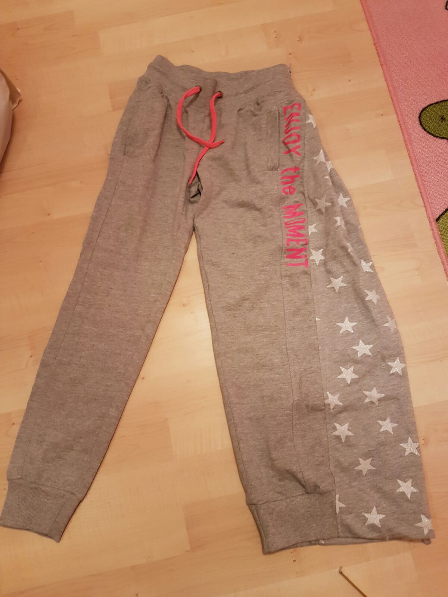

Informatie over kleding

Een goed passende broek is heel belangrijk bij een beenverlenging, want grotendeels van de tijd brengt het kind zijn/haar tijd door in een aangepaste broek. Deze broek heeft wel eisen waaraan voldaan moet worden:
- De broek breder maken door een lap stof aan de zijkant van de broek ertussen te zetten van ongeveer 15 cm aan voor- en achterkant.
- Zorg dat er een rits in gemaakt wordt die zowel van boven als beneden open geritst kan worden. Dit is handig voor als de arts naar haar/zijn been wil kijken.
- Zorg dat er aan de zijkant van de onderbroek drukkers komen voor het makkelijk aan- en uittrekken van de broek bij o.a. toiletbezoek.
Als je zelf niet zo handig bent in het maken van deze broek, zoek dan iemand op die het wel kan en begin op tijd!
Zorg wel dat het een stevige stof is die ertussenkomt en kies ook een stevige joggingsbroek uit. De pinnen steken er zo doorheen.
Wat wij gedaan hebben, is aan de binnenkant waar de pinnen het meest scherp zijn, een extra lap stof genaaid. Dat helpt!

Broek volledige beenverlenging

Broek bovenbeenverlenging

Broek onderbeen verlenging

Onderbroek met drukkers